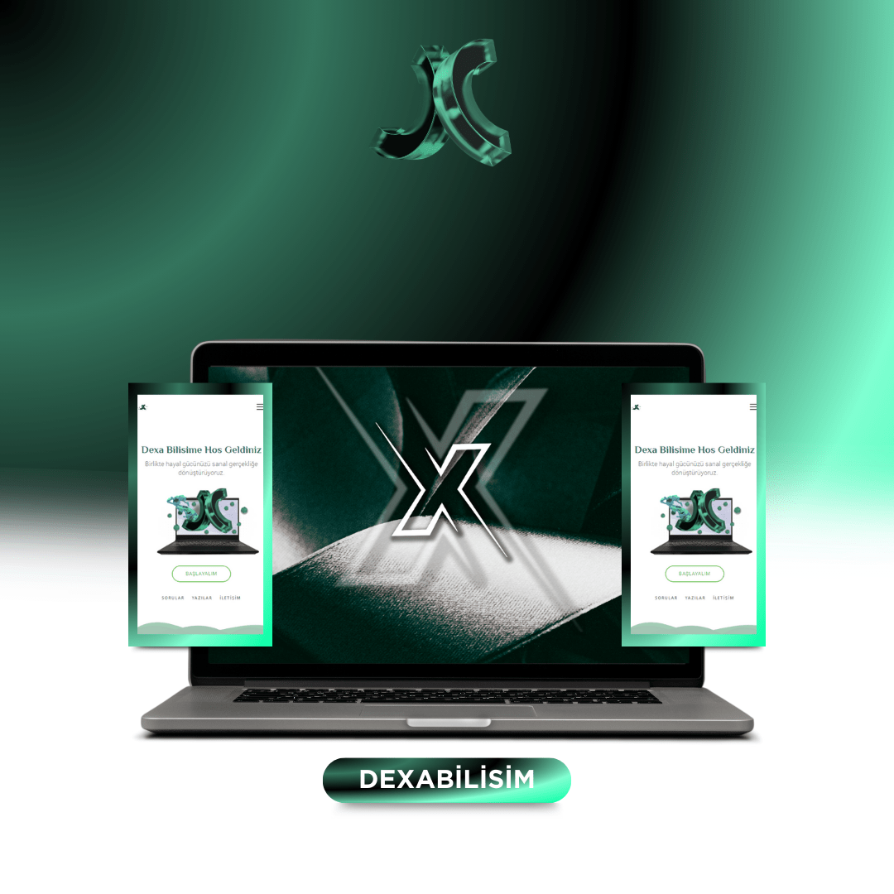

Neden Her İşletmenin Kendisine Ait Bir Web Sitesi Olmalıdır ?
Bugün en basit bir el broşürü bile maliyetli bir iş ve kaç tane basarsanız o kadar kişiye ulaşırsınız. Bastıktan sonra değiştirme lüksünüz de yok. Ama kendinize ait bir web sitesi sizin için çok daha etkili bir reklam aracı olacaktır.Her işletmenin kendi web sitesine sahip olması, dijital çağın gerekliliklerinden biri haline gelmiştir. Bir web sitesi, işletmenizin online varlığını oluşturmanın yanı sıra, potansiyel müşterilere kolay erişim sağlar, işletmenizin profesyonel ve güvenilir bir imajını yansıtır, ürün veya hizmetlerinizi tanıtmanın etkili bir yolunu sunar, müşteri ilişkilerini güçlendirir, pazarlama olanakları sunar ve veri analizi için önemli bilgiler sağlar. Ayrıca, rakiplerinizin önünde olmak ve rekabet avantajı elde etmek için kritik bir adımdır. Dolayısıyla, her işletme, büyümesini desteklemek ve müşteri kitlesini genişletmek amacıyla kendi web sitesini oluşturmalıdır.
-
Kurumsal Mail Avantajı
Daha güvenilir bir iletişim sağlamakla birlikte, sizi bir işletme formatına sokar.
-
İşletme Tanıtım Avantajı
İşletmenizin web sitesi ile birlikte tanıtım ve ürün paylaşımı yapma fırsatları gibi avantajlar sağlar.
-
İstatik ve Analiz Avantajı
Sitenizin panelinden yürüttüğünüz istatistikler ile birlikte kolayca analiz yapabilirsiniz.